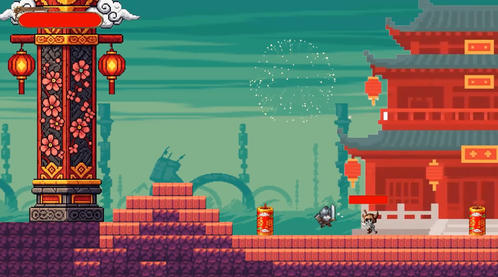
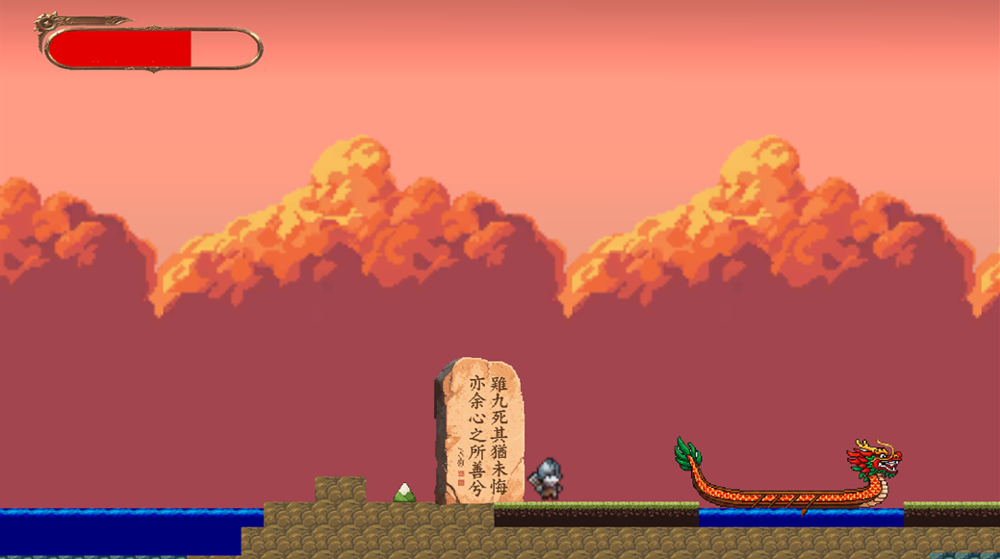
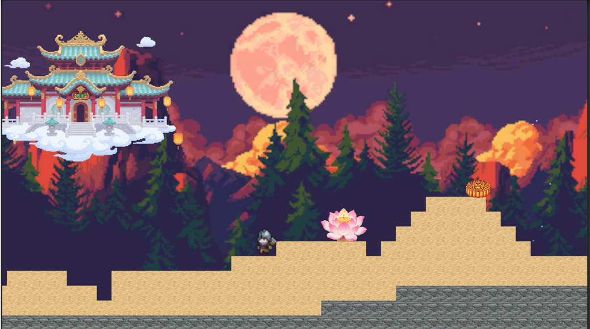
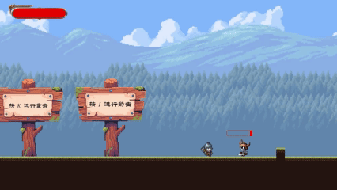
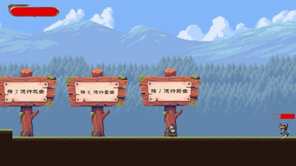
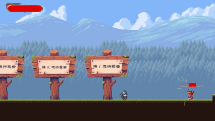
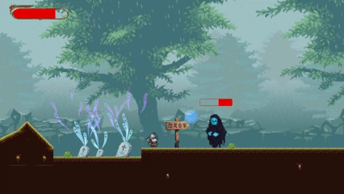
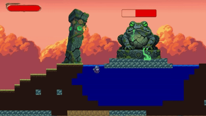

项目简介
《四节驱魔录》是一款融合中国传统节日文化与横版动作冒险要素的2D游戏，玩家将扮演“节守者”穿越四大节日主题关卡（春节、清明、端午、中秋），对抗异变怪物、修复节令秩序。游戏通过传统节日文化背景，打造富有特色的节日场景与战斗体验，强调文化元素与游戏性相结合。
项目时间
技术栈与实现细节
- 基于Unity引擎开发，使用C#实现完整游戏逻辑。采用Tilemap构建多层次场景，结合InputSystem实现键盘输入响应，利用Cinemachine控制镜头跟随及边界限制，提升游戏的流畅度与沉浸感。
- 角色控制系统：采用有限状态机（FSM）架构管理角色状态，实现移动、跳跃、攻击连招等操作，确保行为逻辑清晰。通过单例模式记录并管理玩家状态，提高系统耦合性控制与维护性。
- 敌人行为系统：使用“骨架类+子类”架构抽象定义不同类型敌人，增强模块化与扩展性。针对节日主题设计差异化AI行为（如春节的年兽爪牙近战、清明的游魂远程攻击），并借助UnityAnimator精细控制动画状态切换。
- 文化关卡设计：围绕春节、清明、端午、中秋四大节日设计专属主题关卡与Boss战。例如端午龙舟河战、清明夜行鬼王战等，突出节日文化氛围并丰富战斗机制。
- 道具与成长系统：实现节日特色道具收集系统（如红包、月饼），道具与角色属性成长相结合，激励探索行为，提升玩家粘性与重复游玩价值。
引擎与开发框架：
核心系统开发：
功能截图：
-
春节主题关卡的整体场景设计以浓烈的红色调为主，营造出浓郁的节日氛围与深厚的传统文化底蕴，带给玩家强烈的代入感。视觉色彩上，朱红与金黄作为主色调，突出了春节的“年味”，营造出喜庆、热烈的节日氛围。
场景中巧妙融入了丰富的春节文化元素，如爆竹与烟花装置、红灯笼、传统的中式柱子以及红漆建筑等。
-
清明节主题关卡的整体色调以青灰与墨蓝为主，营造出静谧、哀思与神秘交织的氛围。细雨绵绵、迷雾弥漫，契合清明“雨纷纷”的文化意象，塑造出一幅凄美肃穆的节令画面。
场景视觉氛围设定包括永不停歇的细雨、墓碑装饰、游魂元素等。
- 端午节主题关卡的整体色调以橙红与赤金色为主，温暖的光感渲染出庄严肃穆却又蕴含哀思的氛围，象征着对古人忠魂的缅怀与节日仪式的庄重。
场景视觉与文化构成包括漂浮的龙舟模型、艾草与菖蒲装饰、屈原文化注入等。
- 中秋节主题关卡的整体色调以皎洁的月黄色与银白色为主，营造出神秘、静谧又温柔梦幻的氛围，象征团圆之夜的宁静美好，并传达对神话意象的浪漫想象。
场景视觉与文化构成包括圆月、莲花灯、兔子灯、月宫虚影等。
- 从上至下展示角色的三种攻击方式：
近战攻击：角色快速挥剑，近距离打击敌人，突显快速反应与精准操作。
远程攻击（弓箭）：角色拉弓射箭，精准远程打击敌人，体现远程作战的高效与策略性。
剑气攻击：角色施展剑气技能，发出强力的剑气波，具有广泛的攻击范围和强大威力，展示技能操作的多样性与威力。
- 下面是清明节场景的Boss夜行鬼王的主动技能：暗影坠落；
技能描述：鬼王在玩家头顶上方召唤一群暗影球，在短暂蓄力后集体砸落，造成范围性冲击，具有强烈压迫感与控场能力。
- 下面为端午节场景的Boss毒瘴之王的被动技能：剧毒雷场；
技能描述：每当毒瘴之王受到攻击时，会在其脚下迅速生成一个巨型电球。该电球会对周围敌人持续造成电击伤害，并在短时间内维持存在，逼迫玩家迅速脱离接触区域。









项目亮点：
- Unity 2D 全流程开发能力：掌握从场景搭建、动画控制到物理系统调优等 2D 游戏开发的核心技能。
- 游戏策划思维深化：在游戏设计过程中，验证了“玩法驱动叙事”的设计方法，通过文化IP的融合实现了可玩性与叙事性的平衡。
- 技术栈与工具：深化了对 Unity 引擎的理解，提升了使用 C# 实现游戏逻辑的能力，尤其是在关卡设计、AI 行为及物理系统的调优方面。